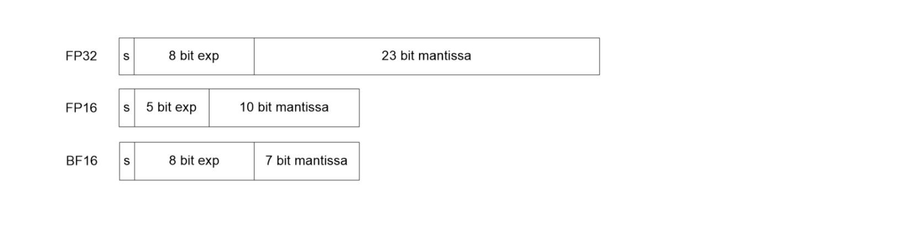

X86 CPU 上部署BF16预测¶
1 概述¶
bfloat16 (Brain float Point)浮点格式是一种计算机内存中占用16位的计算机数字格式。该格式是32位IEEE 754单精度浮点格式(float32)的截断(16位)版本，它保留了符号位的1位，指数部分的8位和尾数部分的7位，舍弃了尾数部分不重要的后16位尾数（在float32中，尾数是23位）。Bfloat16用于降低存储需求，提高机器学习算法的计算速度。关于bfloat16数据类型的更多细节可以在这里找到。目前，X86 CPU bfloat16预测在PaddlePaddle中已经支持，结果如下。X86 CPU bfloat16训练正在开发中。

2 图像分类和自然语言处理模型bfloat16在Intel(R)机型上预测的精度和性能¶
图像分类模型在 Intel(R) Xeon(R) Platinum 8371HC CPU @ 3.30GHz 上预测的精度和性能
| Full dataset | BF16 fps improvement compared to MKLDNN FP32 | TOP1 acc MKLDNN FP32 | TOP1 acc MKLDNN BF16 | TOP1 acc drop |
|---|---|---|---|---|
| resnet50 | 1.85x | 0.7663 | 0.7656 | 0.00091 |
| googlenet | 1.61x | 0.705 | 0.7049 | 0.00014 |
| mobilenetV1 | 1.71x | 0.7078 | 0.7071 | 0.00099 |
| mobilenetV2 | 1.52x | 0.719 | 0.7171 | 0.00264 |
Note: Clas models batch_size=1 nr_threads=1
自然语言处理模型在 Intel(R) Xeon(R) Platinum 8371HC CPU @ 3.30GHz 上预测的精度和性能
| GRU Accuracy | FP32 | BF16 | diff |
|---|---|---|---|
| Precision | 0.89211 | 0.89225 | -0.00014 |
| Recall | 0.89442 | 0.89457 | -0.00015 |
| F1 score | 0.89326 | 0.89341 | -0.00015 |
| GRU Performance (QPS) | Naive FP32 | FP32 | BF16 | (BF16/FP32) |
|---|---|---|---|---|
| thread = 1 | 2794.97 | 2700.45 | 4210.27 | 1.56x |
| thread = 4 | 3076.66 | 4756.45 | 6186.94 | 1.30x |
Note: Gru model batch size = 50 iterations = 160
3 Paddle Bfloat16 Inference 复现¶
3.1 安装Paddle¶
参考Paddle官网，安装Paddle最新CPU或者GPU版本。
3.2 检查机器¶
可以通过在命令行输入
lscpu查看本机支持指令。在Intel支持
avx512_bf16指令的机型上，(目前Cooper Lake机型支持avx512_bf16，如Intel(R) Xeon(R) Platinum 8371HC CPU, Intel(R) d on(R) Gold 6348H CPU），bfloat16性能会获得如上表的性能提升。Cooper Lake机型列表在Intel支持
avx512bw、avx512vl和avx512dq指令但是不支持avx512_bf16的机型上，如：SkyLake, CasCade Lake等，可以顺利运行不报错，但是性能无法达到上表的性能。为了防止在非配套机器上测试bfloat16功能，应进行适当检查:
Python
import paddle
paddle.fluid.core.supports_bfloat16() // 如果为true, bf16可以顺利运行不报错，性能未知。
paddle.fluid.core.supports_bfloat16_fast_performance() // 如果为true, bf16可以顺利运行，且可获得上表所示的性能。
c++
#include "paddle/fluid/platform/cpu_info.h"
platform::MayIUse(platform::cpu_isa_t::avx512_core) // 如果为true, bf16可以顺利运行不报错，性能未知。
platform::MayIUse(platform::cpu_isa_t::avx512_bf16) // 如果为true, bf16可以顺利运行，且可获得上表所示的性能。
3.3 预测部署¶
C++ API举例如下:
paddle_infer::Config config;
if (FLAGS_model_dir == "") {
config.SetModel(FLAGS_model_file, FLAGS_params_file); // Load combined model
} else {
config.SetModel(FLAGS_model_dir); // Load no-combined model
}
config.EnableMKLDNN();
config.SwitchIrOptim(true);
config.SetCpuMathLibraryNumThreads(FLAGS_threads);
// 将所可转为BF16的op转为BF16
config.EnableMkldnnBfloat16();
// 如果您想自己决定要替换哪些操作符，可以使用SetBfloat16Op选项
//config.SetBfloat16Op({“conv2d”、“pool2d”})
auto predictor = paddle_infer::CreatePredictor(config);
Python API举例如下:
if args.model_dir == "":
config = Config(args.model_file, args.params_file)
else:
config = Config(args.model_dir)
config.enable_mkldnn()
config.switch_ir_optim(True)
config.set_cpu_math_library_num_threads(args.threads)
config.enable_mkldnn_bfloat16()
# 如果您想自己决定要替换哪些操作符，可以使用set_bfloat16_op选项
# config.set_bfloat16_op({"conv2d", "pool2d"})
predictor = create_predictor(config)